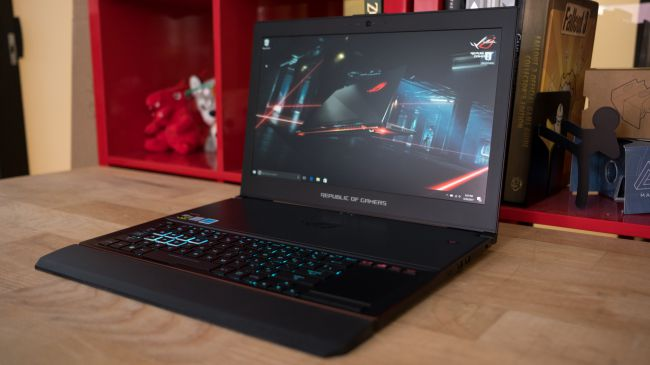

CPU: Intel Core i7 | Graphics: Nvidia GeForce GTX 1080 (8GB GDDR5X VRAM) | RAM: 16GB | Screen: 15.6-inch FHD (1,920 x 1,080) anti-glare, wide-view 120Hz panel with G-Sync | Storage: 512GB M.2 PCIe x4 SSD
It’s almost as if Asus has initiated a new laptop category of its own with the Zephyrus GX501. That’s because, with the help of Nvidia’s Max-Q technology, the Republic of Gamers has crafted a hardy gaming notebook that measures no thicker than an Ultrabook. In fact, the only area wherein it’s not Ultrabook-esque is the battery, which struggles to attain a consecutive lifespan beyond two hours. Still, it’s progress that even our Australian readers can now enjoy.

Asus ROG Zephyrus GX501